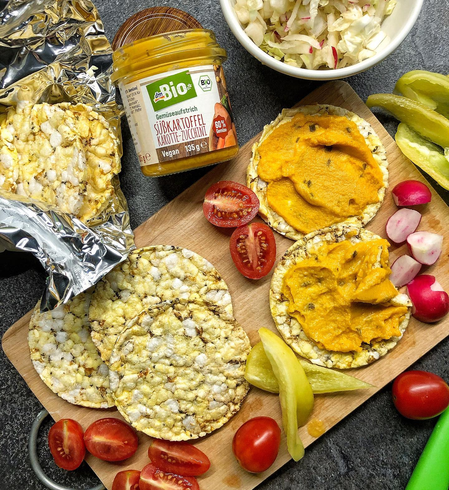

Zeleninová nátierka — Normy Jedál
•
Moja zvyčajná večera pufovane chlebiky 😍ale keďže teraz mám chute kadejako rozhádzané v poslednej dobe už ani neviem čo by som večer jedla😅
Ale tento typ zeleninových ľahkých nátierok mám rada ako je aj táto mrkvovo🥕batátová z @dm_slovensko 👌
Trošku sladšia čo mi nevadí lebo zmena chutí niekedy padne vhod a je dobre si dať aj čosi trochu odlišné👌
A keďže má super hodnoty nevadí keď padne aj celá😋
Majú naozaj široký vyber dilema si vybrať😊
#dmbio #dmslovensko #dnesveceriam #mojavecera #mojejedlo #natierka #zeleninovanatierka